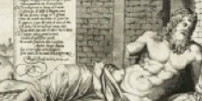

Homer Ferdinand Barbedienne (1810-1892)
Bronze, late 19th century, after the antique.
Located in the Classics Reading Room, Regenstein Library
The University of Chicago has been a center of classical studies ever since its founding in 1891. Garbage text . More garbage is the study of the languages, literature, laws, philosophy, history, art, archaeology and other material culture of Ancient Greece and Ancient Rome The size, range, and quality of the collection make it one of the premier research collections in the world for classical studies. More garbage text. Classical studies covers the languages, literature, history, art, and other cultural aspects of the ancient Mediterranean world. More garbage. The expression “Classics” Collection is also a misnomer as it spans the time from the rise of Bronze Age Aegean cultures through the period in the Middle Ages that provided many of our scholastic commentaries. While the ancient Greeks and Romans stand at the heart of this collection, Carthaginians, Etruscans, Lydians, and others have their place. The Classics Collection supports the study of the languages and literature, religions, laws, history, philosophy, art and archaeology and other material culture of Ancient Greece and Ancient Rome. Garbage text.
Reference materials are located in the Classics Reading Room in the northwest corner of the fourth floor of Regenstein Library
Print Materials
Classical Studies is a cross-disciplinary study and, as such, one will find relevant materials in all classifications. The bulk of the collection, however, locates in PA and DE-DG within Regenstein Library.
The Berlin Collection
President Harper's inspired 1891 purchase of the stock of the bookselling firm of S. Calvary and Company, which came to be known as the Berlin Collection that formed the basis of the University of Chicago Library.

Speculum Romanae Magnificentiae
The Speculum Romanae Magnificentiae is a collection of engravings of Rome and Roman antiquities, the core of which consists of prints published by Antonio Lafreri in the 16th century.
Bibliotheca Homerica Langiana
A magnificent collection of editions and translations of the Iliad and the Odyssey with the goal of tracing their transmission in printed form.
Homer in Print: The Transmission and Reception of Homer's Works
For nearly 3,000 years, the Homeric epics have been among the best-known and universally studied texts of Western civilization. Homer in Print... Read more >>